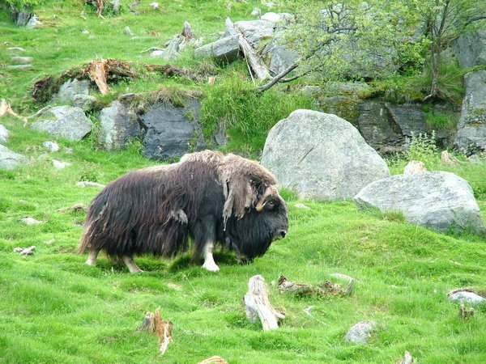

About
The Dovrefjell area is now almost entirely protected and being used as two different national parks. Dovrefjell-Sunndalsfjella National Park, is founded in 2002 which surrounds the previous and smaller Dovrefjell National Park. The Dovre National Park was founded in 2003, which is a year later after Sunndalsfjellas National Park. It actually connects all the protected ares in the Sunndalsfjella Park with Rondane´s National Park. The Dovrefjell was a natural habitat for rare plants and animals, then we made it into a national park in 1911, people put some of the many rare plants under protection. Because they were constructing a railroad from Oslo and all the way to Trondheim.
When sightseeing and walking in the Dovrefjell area and if your lucky you might see a animal called Muskox. But be aware, the Muskox is a strong and powerful animal which could easily attack if you ever get to close or irritate it. It´s latin name is Ovibos moschatus and is in the Bovidae family. They got the name Dovrefjell because of the muniplacity was named Dovre but in the area, there was a lot of mountains. Snøhetta was counted to be the highest mountain in Norway after they had formed an independent nation after being a part of Denmark for several years. This happened in 1814. Some years later they discovered newer mountains and then the biggest called Galdhøpiggen.
